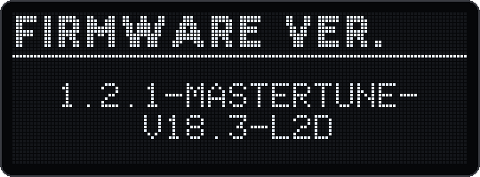

mastertune is a personal fork of the official Deluge community firmware 1.2.1 with a set of changes on top. This chapter tells you which file to install, how to install and check it, and how to go back. Everything this manual does not describe works exactly as in 1.2.1.
| Topic | What you get | Chapter |
|---|---|---|
| Tuning | A master tune from 415.3 to 466.2 Hz in 0.1 Hz steps, for example 432 Hz. Everything that sounds follows it, external MIDI gear included. | 2 |
| Load | About 20–25% less CPU work per sample than 1.2.1, more voices before any are cut, smarter sample streaming, a RAM saver for kits. | 3 |
| CPU monitor | One line on the OLED with the load and the voices, plus a warning while the Deluge lowers its quality or cuts voices. | 3 |
| USB audio | The Deluge as a stereo audio input on the computer: 24 bit, 44.1 kHz, no driver, bit-exact. | 4 |
| Sound | Filters without rustle, steps or clicks, a real shelving EQ, volume in 0.5 dB steps shown in dB, an output limiter, a filter crossing guard, a reworked reverb and delay. | 5 |
| Arpeggiator | The arpeggiator of community firmware 1.3, plus latch, ratchet bounce and a ping-pong roll. | 6 |
| Workflow | Song browser with versions, countdown on song change, saving without crackle, OLED brightness, flicker-free pad dimming and a list of fixes. | 7 |
| Computer | DelugeRec, DelugeTuner, DelugeBaseline, the CPU monitor page, the profiler and file access over USB. | 8 |
| Drone | A frequency drone with up to 16 tones, drone tracks, and the drone together with a Korg volca keys. | 9, 10 |
The current version is v18.3. All firmware files are in the folder mastertune-1.2.1/ of the repository github.com/Giansn/deluge. You need one of these:
| File | What it is |
|---|---|
deluge-1.2.1-mastertune-v18.3-l2d-3581f019.bin | The current version. With the L2 cache for code and data (§1.5). v18.3 exists only in this variant. |
deluge-1.2.1-mastertune-v18-124aeaa2.bin | v18 without the L2 cache, for switching back if the L2 variant crashes or behaves strangely. It lacks the fixes of v18.2 and v18.3. |
deluge-1.2.1-mastertune-v17-2cb5e31b.bin | v17 without the L2 cache. |
Every earlier version from v2 on is in the same folder (history in §11.7). Next to the newer files lies a .symbols.json of the same name. It holds the function names for the profiler (§8.6) and fits only exactly that .bin.
.bin file into the root folder of the SD card. Leave no other .bin file there.This is the same procedure as for any Deluge firmware.
Open Settings → Firmware version. From v18 on the OLED shows the name in the normal font, on up to three lines and without the hash: 1.2.1-mastertune- / v18.3-l2d. The hash stays in the file name.
Up to v17 the name included the hash, for example 1.2.1-mastertune-v17-l2d-b3385d83.
When you report a problem, always give this name (§11.8).

l2d in a file name means: this firmware uses the processor's L2 cache for code and data. From v17 on this is the main file, and v18.2 and v18.3 exist only this way.
deluge-1.2.1-mastertune-v18-124aeaa2.bin, v18 without L2, and report what happened (§11.8).To go back, install the other firmware exactly as in §1.3: to v18 without L2 with the file from §1.2, to 1.2.1 with its official file. Your songs keep loading. What happens to the new things:
| Saved with mastertune | In an older mastertune version or in 1.2.1 |
|---|---|
| Master tune | The official firmware does not know the entry in CommunityFeatures.XML. It keeps it anyway and writes it back unchanged. |
| Volume in dB | Saved as before. Songs sound equally loud and still load in v17. |
| Arpeggiator additions | 1.2.1 loads the song but skips the kit arp, randomizer, latch and bounce, and loses them at the next save. Walk and Pattern become Up. |
| Reverb model Digital | The song plays without reverb in 1.2.1. |
| Reverb damping | Stored as in 1.2.1, so songs stay interchangeable. |
| Drone and drone tracks | Older firmware skips the drone and the drone rows. Don't save such a song there: the drone rows get lost (chapter 9). |
| Community settings | v18.3 keeps settings it doesn't know. 1.2.1 and v17 don't: after switching to v17 and back, Output limiter, Filter crossing guard and OLED brightness are back at their defaults. |
github.com/Giansn/deluge/issues (§11.8).